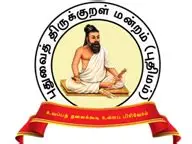
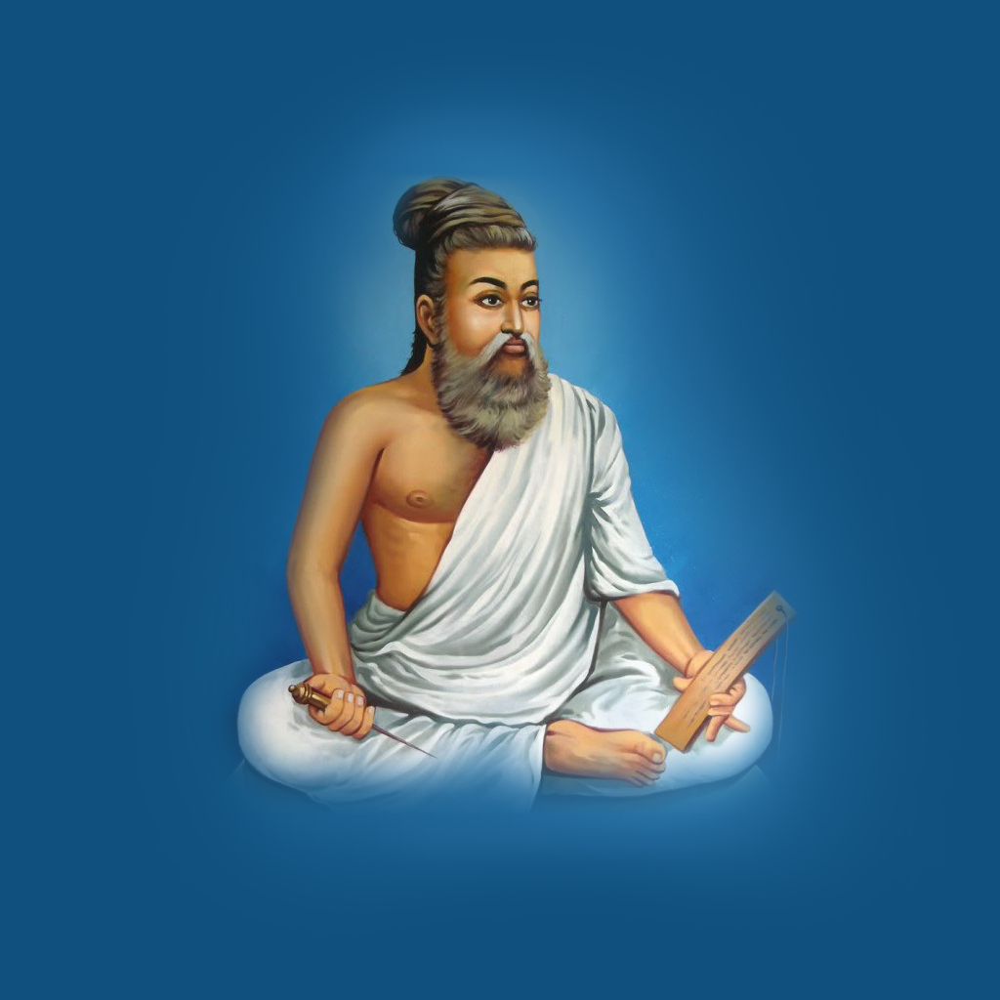

புதுவை திருக்குறள் மன்றம்
(PUDUVAI THIRUKKURAL FORUM)
(REG.NO.100/2015)
முகவரி (ADDRESS)
HOTEL JAYARAM CAMPUS
NO.90, KAMARAJAR SALAI
PUDUCHERRY - 605013
Telephone: 0413-2242212
Mobile: +91 94432 58101
திருக்குறள் அதிகாரங்கள் (Thirukkural Chapters)
ஆசிரியர் குறிப்பு (Author's Profile)
நூல் குறிப்பு (About Thirukkural)
திருக்குறளின் தனித்துவத்தன்மை (Uniqueness in Thirukkural)
திருவள்ளுவர் வாழ்க்கை வரலாறு (Thiruvalluvar Biography)

திருக்குறள் நூல் (Thirukkural Book)
எங்களைப் பற்றி (About Us)
மன்றத்தின் நோக்கங்கள் (Objectives)
நிர்வாகிகள் (Office Bearers)
வாழ்நாள் உறுப்பினர் படிவம் (Life Membership Form)